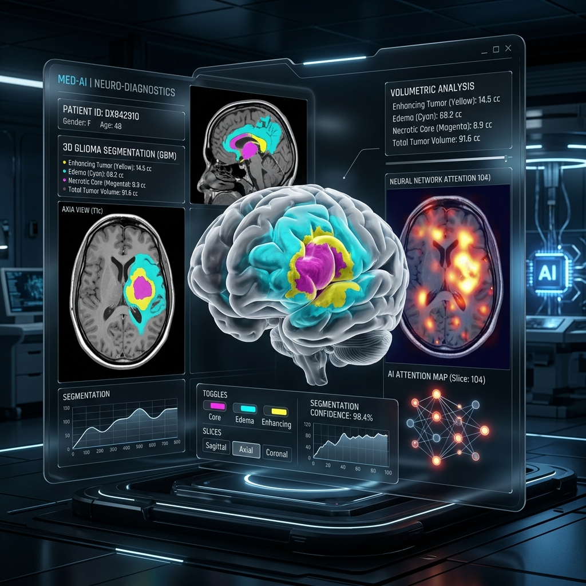

A Unified Explainable & Robust AI Framework for Brain Tumor MRI Segmentation
A research thesis framework combining high-accuracy multi-modal MRI segmentation (ResNet34 + Swin Transformer + Cross Attention), Grad-CAM++ interpretability, and robust performance benchmarking under imaging perturbations.
92.11%
Baseline Validation Dice
1,251
BraTS Patient Cases
4 Modalities
T1, T1ce, T2, FLAIR

Interactive Segmentation Studio
Select sample MRI volumes, toggle modalities, inspect 2D axial slices, and observe live AI segmentation predictions with multi-region overlay masks.
Grad-CAM++ Interpretability
Grad-CAM++ highlights feature map activations in the decoder that drive segmentation predictions for specific tumor classes.
Robustness & Perturbation Testbed
Model Benchmarking Leaderboard
Comprehensive comparison of the Proposed Hybrid Framework against standard CNN and Transformer baselines on the BraTS 2021 dataset.
| Model Architecture | Encoder Backbone | Mean Dice Score | Mean IoU | HD95 (mm) ↓ | Robustness Score | XAI Transparency |
|---|---|---|---|---|---|---|
| Proposed Hybrid Framework 🏆 | ResNet34 + Swin Trans. | 0.9320 | 0.8745 | 3.82 | High (0.912) | Grad-CAM++ Integrated |
| ResNet34-UNet (Baseline 1) | ResNet34 | 0.9211 | 0.8540 | 4.50 | Medium (0.840) | Post-hoc Only |
| U-Net++ (Baseline 2) | ResNet34 (Nested) | 0.9185 | 0.8490 | 4.62 | Medium (0.832) | Post-hoc Only |
| DeepLabV3+ (Baseline 3) | ResNet34 (Atrous) | 0.9050 | 0.8260 | 5.10 | Low (0.780) | Limited |
| SegFormer (Baseline 4) | MiT-B0 Transformer | 0.9140 | 0.8410 | 4.85 | Medium (0.855) | Attention Maps |
Thesis Team & Supervisors
Department of Computer Science and Engineering, Daffodil International University (FYDP Summer 2025/2026)